안녕하세요.
설비전문업체 "하수구수사대" 입니다.
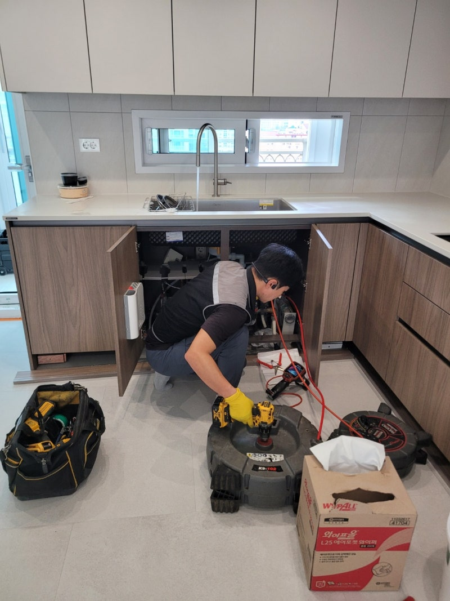
오산 가수동 싱크대배수관막힘 수청동 하수도역류 뚫는업체 설비
집안일에 예상치 못한 트러블이 생긴다면 모든 분들이 고민되실 텐데요.
특히나 물 사용이 잦은 주방 혹은 욕실에서 갑자기 막힘 문제 등으로 물을 아예 사용하지 못하는 상황이라면 얼른 전문 업체에 문의하시는 것이 좋습니다.
싱크볼 안에 물이 고이는 현상이 생기면 밥을 짓고 식재료를 다듬는 등의 일에 차질이 빚어지죠.
뿐만 아니라 밥을 먹은 후에 설거지 하는 것도 어려워지므로 막힘 문제가 생기면 최대한 빨리 전문가에게 맡기는 것이 좋다고 말씀드립니다.
저번에도 한 고객님 댁에 막힘 증상이 발생하여 근본적인 문제를 찾아 해결해 드리고 왔습니다.
이 댁은 싱크대를 바꾼지 얼마 되지 않았는데도 이런 막힘 현상이 생긴다는 게 의아한 점이었습니다.
혼자 힘으로 해결하지 못하는 부분이기 때문에 전문 업체인 저희 쪽으로 전화하신 듯 합니다.
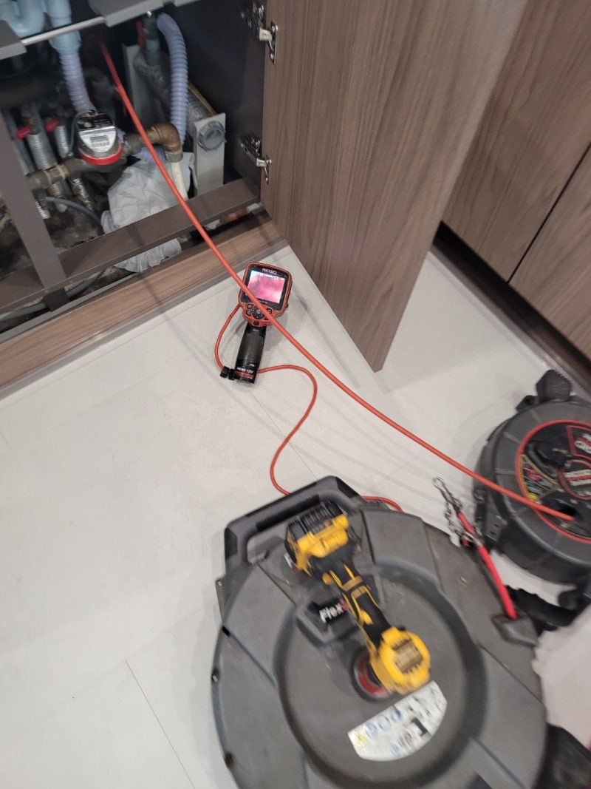
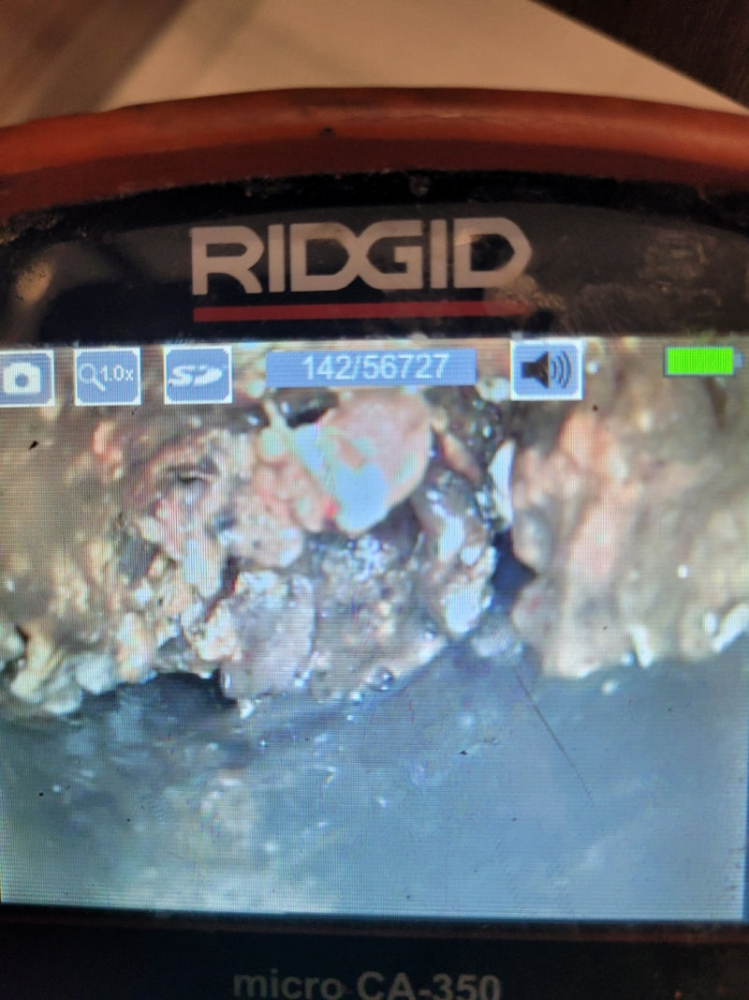
오산 가수동 싱크대배수관막힘 수청동 하수도역류 뚫는업체 설비
현장을 방문해 가장 먼저 확인해 본 곳은 싱크대 하부장 아래쪽이었어요.
싱크대 아래쪽은 이미 물이 넘쳐서 축축하게 젖어있을 뿐만 아니라 그 양도 굉장히 많아 보였어요.
이렇게 방치하게 되면 곰팡이가 생기는 것은 물론 아랫집에까지 물이 새는 문제가 발생할 수 있기 때문에 바로 작업을 진행했습니다.
본격적인 작업을 위해서 싱크대 아래에 연결된 주름관을 분리해 점검해 보니 예상대로 많은 이물질이 들어 있는 것을 볼 수 있었습니다.
이것들이 찌꺼기인데 이 얼룩들이 주름 사이사이에 달라붙어 굳어 있습니다.
그리고 하수도 맨 윗부분에도 이것들이 곳곳에 붙은 상태여서 완전히 없애기 위해 석션기를 사용하기로 했어요.
석션기는 주름관 내부의 이물질 외에도 하수관 깊은 곳에 쌓인 찌꺼기들까지 제거할 수 있는 도구이며 이같은 막힘 현상을 해결하기에 알맞은 장비입니다.
이물질로 인해 입구 쪽이 막힌 상황도 이 석션기만 있으면 막힘을 해결할 수 있답니다.
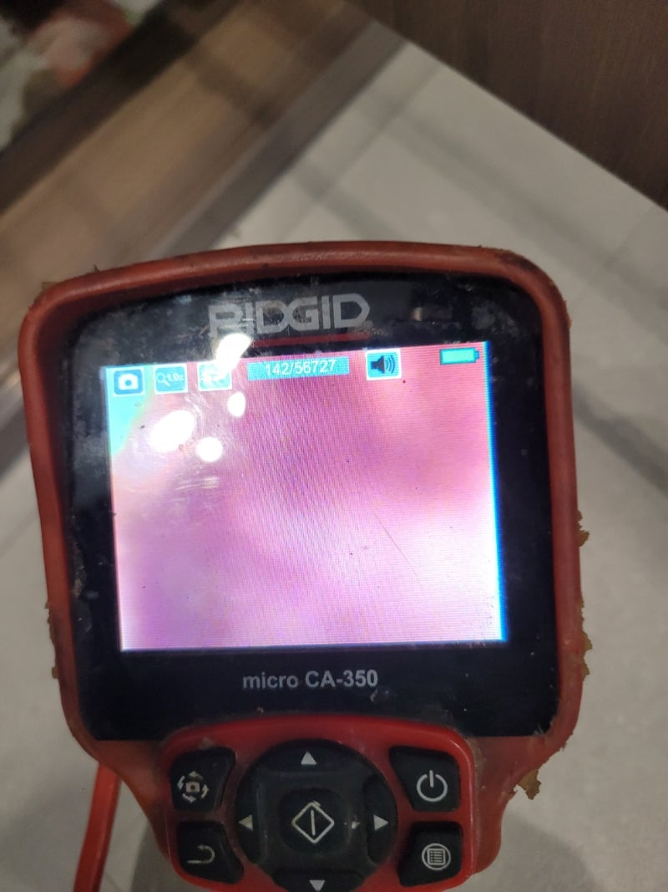
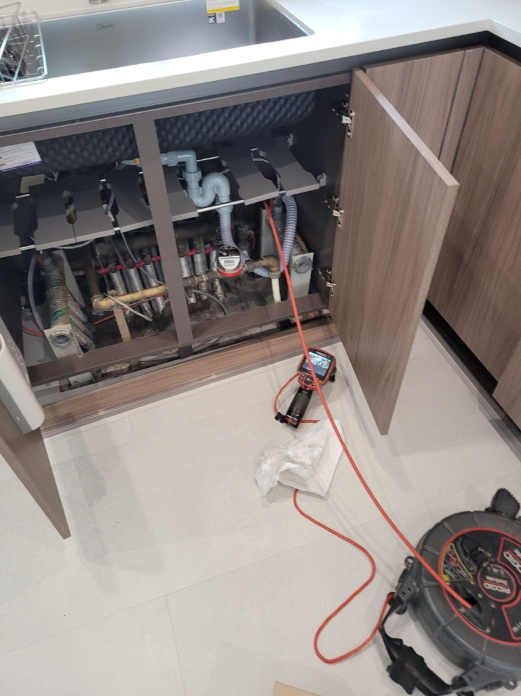
오산 가수동 싱크대배수관막힘 수청동 하수도역류 뚫는업체 설비
본격적으로 배관을 뚫으려면 석션 작업을 통해 하수관 내부를 일단 청소해 주는데, 문제 해결에 적합한 방법을 파악하기 위한 중간 과정으로 생각하시면 됩니다.
석션기를 최대한으로 돌렸는데도 근본적인 문제가 해결되지 않는 상태여서 배관 내부를 좀 더 꼼꼼하게 살펴봐야 했습니다.
이번에는 배관 내시경 기기를 사용해 배관 깊숙한 곳까지 체크하는 것인데요.
지금 이 화면에서는 전부 빨간색으로만 나타나고 있죠.
장비 헤드부분에 전등이 부착되어 있어서 그 불로 기름찌꺼기를 비춰보면 이런 빨간색으로 보인답니다.
즉, 배관 속에 기름찌꺼기가 잔뜩 쌓여있다면 화면으로 볼 때 빨갛게 나타나는 것이죠.
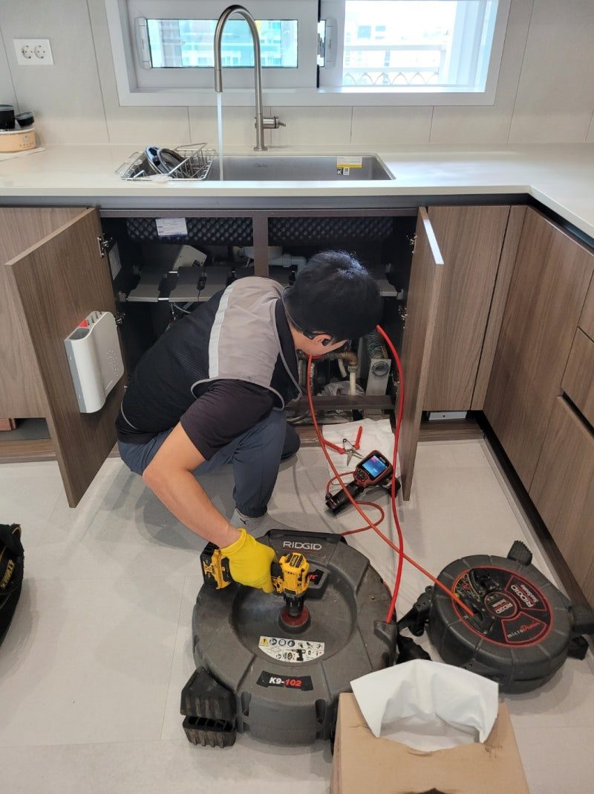
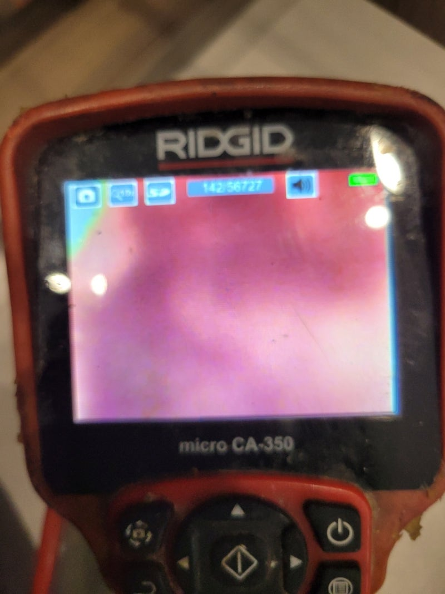
오산 가수동 싱크대배수관막힘 수청동 하수도역류 뚫는업체 설비
한 번 더 정확하게 살펴본 결과 배관 청소가 안 되어 있는 것 같았습니다.
이번 현장에서 싱크대 막힘이 발생하는 원인은 싱크대 배관 내부에 계속해서 축적되어 굳어진 기름찌꺼기라고 생각되었습니다.
그렇기 때문에 음식물 찌꺼기를 청소하기에 효과적인 장비로 완벽하게 해결해 드리기로 했습니다.
제거 작업을 할 때 필요한 장비, 바로 플렉스 샤프트입니다.
샤프트 케이블 끝에 붙어있는 헤드가 체인 형태이다 보니 큰 이물질도 부셔서 흡입하기 쉽도록 만들어주는 것입니다.
이처럼 잘게 만들어 두면 처음에는 제거되지 않던 찌꺼기들도 남김없이 배관 밖으로 밀어낼 수 있어요.
다만, 배관의 상태와 이물질의 크기를 계속 확인해가며 장비를 사용해야 작업이 원활하게 진행됩니다.
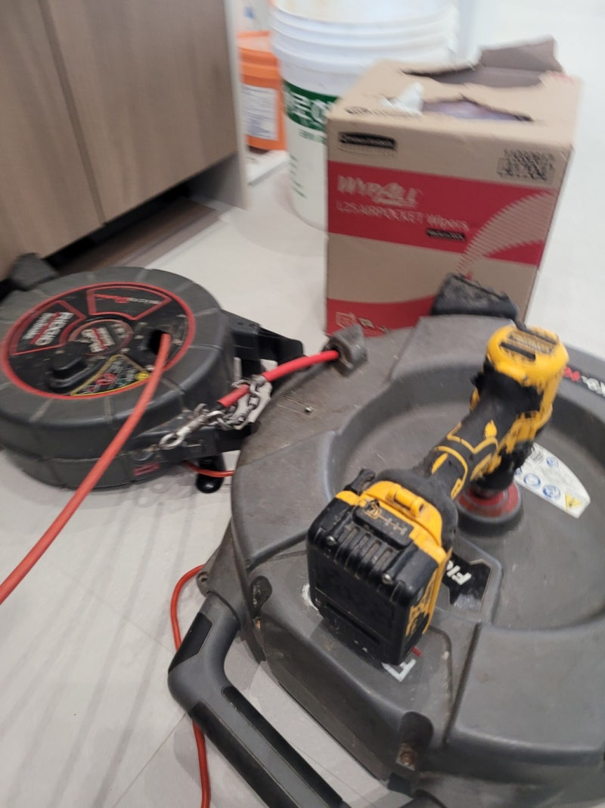
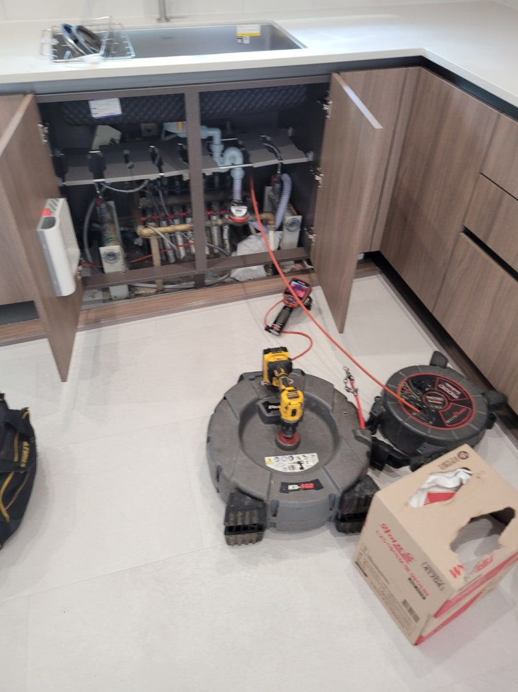
오산 가수동 싱크대배수관막힘 수청동 하수도역류 뚫는업체 설비
한 번 작업을 시작할 때마다 배관 내시경 카메라를 집어넣어 배관 상황을 반복적으로 살펴보고, 도중에 석션도 진행해서 기름찌꺼기 없는 청결한 배관이 만들어지도록 신경썼어요.
저희 업체는 물이 흐르게만 해결하고 끝내지 않습니다.
문제가 나타난 이유를 찾고 제거하여 싱크대 막힘 현상을 해결하는 것은 물론 하수관 내부까지 꼼꼼히 확인하여 기름때를 모두 제거했습니다.
통수 테스트 결과, 물이 막히지 않고 시원스럽게 흐르는 것으로 보아 작업이 제대로 끝났다는 것을 알 수 있었답니다.
모든 청소가 끝난 후에는 석션기에 달려있는 통 안에는 배관 속에 쌓여있었던 이물질들이 담깁니다.
가만히 보면 바닥에 각종 덩어리들이 가라앉은 모습을 확인할 수 있습니다.
이건 하수관에 바로 흘려보내면 막히기 때문에 거름망으로 알갱이들을 모두 제거한 후 각각 폐기해야 합니다.
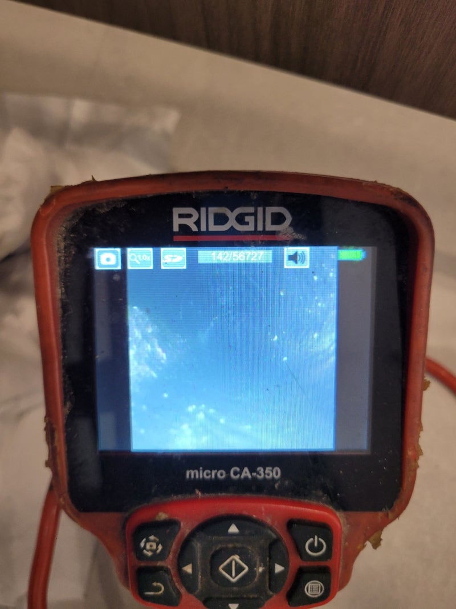
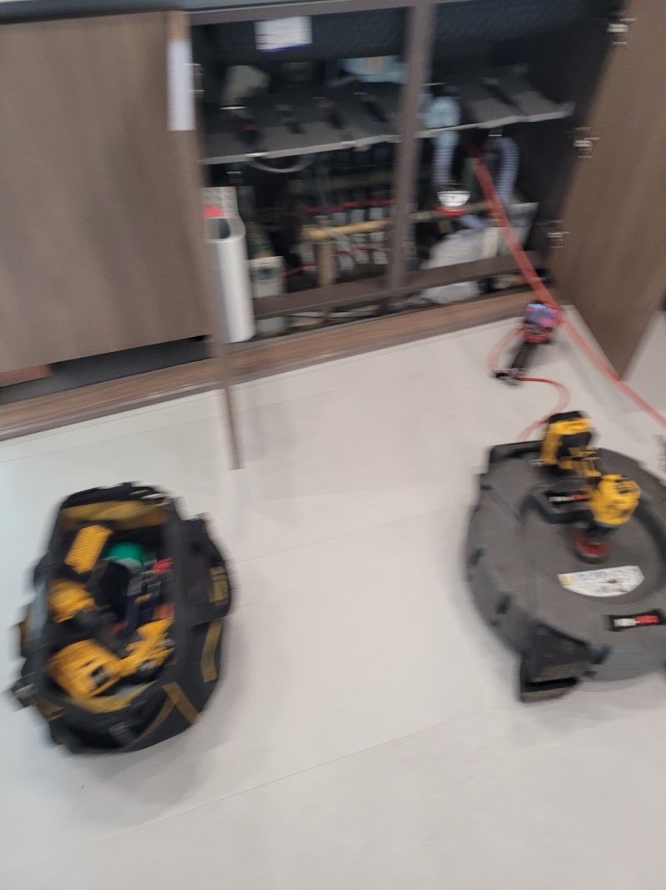
오산 가수동 싱크대배수관막힘 수청동 하수도역류 뚫는업체 설비
보통의 경우 이 과정을 끝으로 모든 작업이 끝나요.
이번 현장의 주름관은 아주 노후된 상태였는데요.
이 주름관도 새것으로 교체하니 자꾸 반복되었던 싱크대 물고임 증상이 깔끔하게 해결되어 다행이었습니다.
부엌 싱크대가 계속해서 막힐 경우 일반 배관 세정제만으로는 해결하기가 힘듭니다.
뿐만 아니라 슬러지가 단단히 쌓여있는 경우에도 전문 기계를 써서 신중하게 제거해야 합니다.
전문업체의 도움을 받아야 신속하게 문제가 해결됩니다.
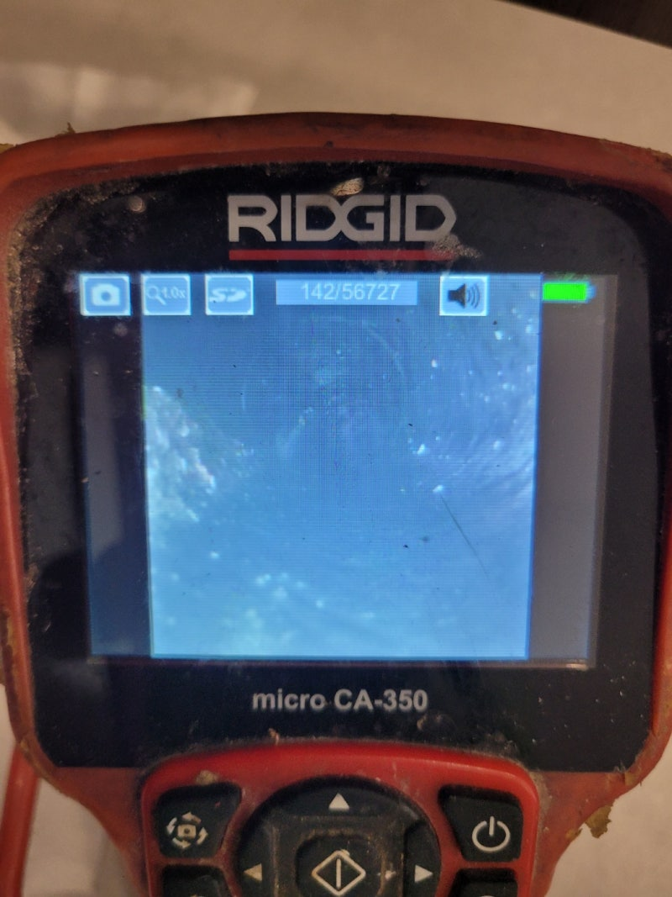
오산 가수동 싱크대배수관막힘 수청동 하수도역류 뚫는업체 설비
그러므로 내시경 장비나 막힘 해결 전문 도구를 보유하고 있는 업체를 이용하셔야 빠르게 작업이 진행됨을 기억해 주세요.
막힘 증상으로 인해 배관을 수리해야 한다면 장비와 기술력을 전부 보유하고 있는 저희업체에 맡겨주시면 확실하게 해결해 드리겠습니다.
하수구수사대 010 2340 2118
#가수동하수구막힘 #가수동싱크대막힘 #가수동싱크대역류 #가수동배수관막힘 #가수동배관뚫는곳 #가수동설비 #가수동맨홀막힘 #가수동하수구뚫는업체 #가수동변기막힘
#수청동하수구막힘 #수청동싱크대막힘 #수청동싱크대역류 #수청동하수구역류 #수청동화장실막힘 #수청동설비 #수청동하수구뚫는곳 #수청동하수구뚫는업체 #수청동변기막힘